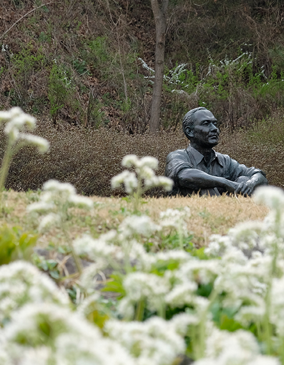

Hot! Place

朴寿根美术馆
“韩国人最爱的画家朴寿根”
韩国人最爱的画家朴寿根
朴寿根是一位韩国人耳熟能详的著名画家。也可能是因为小时候在课本里看过，他的画具有让人们缓解紧张情绪的魅力。朴寿根出生在杨口一个贫苦家庭，是家里的长子，度过了一个贫苦的童年。与我们现在所想的朴寿根画家的价值不同，因为家境贫寒，他没有接受过正规的美术教育。他负责家庭的生计，通过自学培养了对美术的梦想。朴寿根先生是以穷苦老百姓的生活为素材，为描绘“人类的善良和真实”而献出一生的画家。
朴寿根
“韩国人最爱的画家朴寿根”
也许正因如此，在朴寿根的作品中，比起华丽或抽象的东西，更多地描绘了日常朴素的东西。大部分使用了由线条和轮廓表现的对象，用白色、灰褐色、黄褐色组成的土俗色彩，不拘泥于远近法使用了强调明暗的技巧等。朴寿根先生的作品具有令人舒适而平静的魅力。
他利用简单的形态和线描来刻画对象的本质，通过西洋画技巧，用花岗岩等材质感表现我们民族的情感，形成了韩国美的典型。他用温暖的视线描绘了我们民族日常生活场景，被评价为既是体现朴素美的平民画家，又是二十世纪最具韩国特色的画家。
环顾美术馆，会发现这不仅仅是美术作品，其中也蕴含着朴寿根先生的人生。他的作品很容易让人们想象到画中的某一个场面，走进他的人生做一次短暂的停留。
他略显粗糙却很温馨的人生以及绘画
朴寿根的作品以暗淡的色感和粗糙的质感为特征。略显粗犷冰冷的感觉，使欣赏画的人感受到他疲惫的一生。朴寿根美术馆的外墙实际上是由花岗岩砌成的。看着那堵墙，给人一种粗硬的感觉。就像他在作品中所表现的那样。画家朴寿根的号是“美石”。也许正是从用于建造塔和石碑的花岗石的美丽中取号。他试图在石雕中寻找美丽并且将其造型化。朴寿根表现古老石雕表面的粗糙质感，想体现韩国的美。从美术馆的外观中也能感受到他人生的每一个细节。
也许正是从用于建造塔和石碑的花岗石的美丽中取号。他试图在石雕中寻找美丽并且将其造型化。朴寿根表现古老石雕表面的粗糙质感，想体现韩国的美。从美术馆的外观中也能感受到他人生的每一个细节。
尽管生活穷苦而艰难，但这并不意味着他的生活里只有寒冷和黑暗。朴寿根在26岁的时候，遇见了自己的人生伴侣金福顺女士。他们第一次见面的地方是洗衣处，朴寿根用文字表达了他能够做到的最真实的爱。“我是画画的人。财产只有毛笔和调色板。如果你能答应我和我结婚，物质上会受苦的。但是在精神上我有信心比任何人都能让你幸福。我要成为一名优秀的画家，你想不想成为一位优秀画家的妻子？”这是朴寿根先生生前写给金福顺女士的信中的部分内容。从文章中可以感受到朴寿根先生对金福顺女士的爱和温暖的真心。
金福顺女士的日记中所描述的朴寿根先生，也是内心温暖的人。“他买东西的时候，不喜欢去大商店，而是更喜欢到路边商贩或背包商贩那里买东西。也许他总是怜悯那些背着筐叫卖东西的女人，总是同情那些战后受苦受难的邻居，也许正因为如此，他作品的素材全都是在路边摊做生意的人。”从金福顺女士日记中上述内容，也可以发现朴寿根先生的内心向往和美好追求。虽然他自己也没有过上富裕的生活，但是他始终拥有一颗怜悯和同情他人的善心。
通过用他的视觉去描绘的作品以及在美术馆的处处，都可以感觉到即使他的生活很贫穷但他的灵魂却是多么的温暖。
自然、
绘画以及人
朴寿根美术馆最大的魅力，不是为了美术馆而存在自然，而是在美术馆中融入自然的“和谐”。如果仔细观察整个美术馆，随处会浮现出朴寿根的作品。感觉就像是站在一起看着他生前所画的人和事物。走在树木和草丛中，仿佛朴寿根先生的绘画作品和他的人生以及我自己都一起融入到大自然中。
走在去美术馆内朴寿根墓地的路上，在朴寿根亭子和现代美术馆将举办美术收藏品和各种主题的企划展。除了朴寿根先生的作品以外，还可以欣赏到其他特别展。他只留下了作品，而他的影响力却始终感动着许许多多当代艺术家。 今年6月，朴寿根美术馆内开设了儿童美术馆。这里融入了艺术和尖端技术。还可以更亲切地了解朴寿根先生的童年故事，激发儿童五感的体验空间也准备了多种多样的。与地方艺术家们共同打造的这个空间并不一定只属于儿童。不仅孩子们可以享受，父母也可以一起理解朴寿根先生的艺术观。在这里可以通过体验和游戏学习各种资料。 朴寿根美术馆不只是简单展示一位画家的作品的地方，空间本身就是孕育自然、艺术和人的空间。在这里可以放慢脚步欣赏朴寿根先生具有的艺术性和现代艺术家们的作品，体验美术馆所具有的空间意义。
朴寿根美术馆的建筑是由李钟昊（1957-2014）建筑师设计的。从朴寿根美术馆的外观来看，既有艺术感又有个性。石块和混凝土的粗糙感、玻璃和金属的冰冷，表现为一个整体的建筑。 建筑物的外部可能有点冰冷和黑暗的感觉，但看着被草丛包围的整体，绿油油的草地和灰色的花岗岩形成了协调。这是走出美术馆到户外散步的好地方。 杨口朴寿根美术馆与其说是“美术馆”，倒不如说是享受自然，从事艺术活动，走进画家生活中的地方。画、建筑和自然不是分离，而是就像原来就是一个整体，也许这正是一座即使轻松光顾却能收获颇丰的最完美的美术馆。